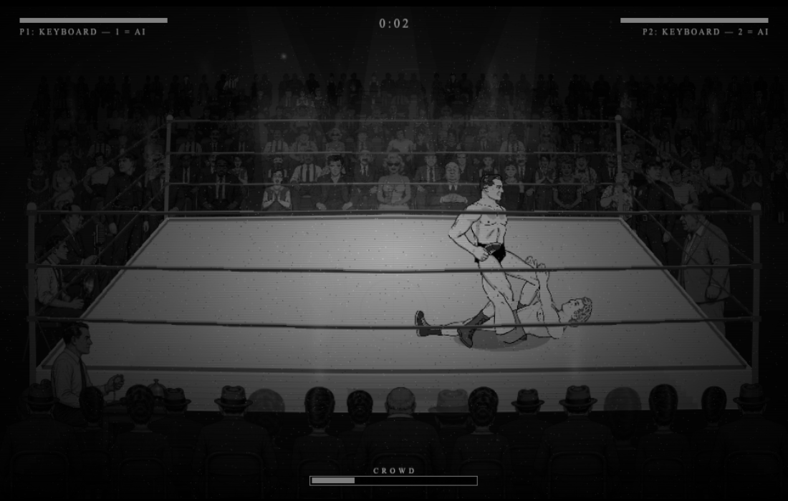
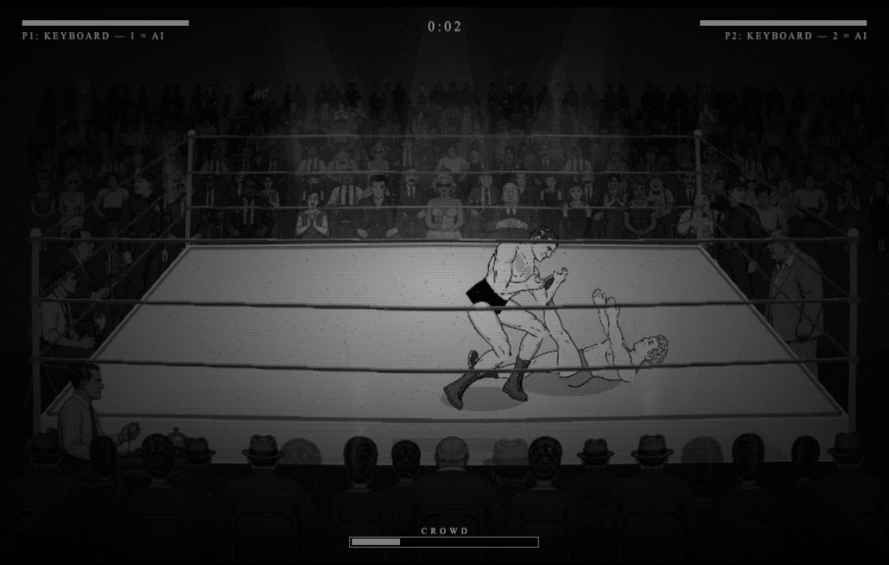
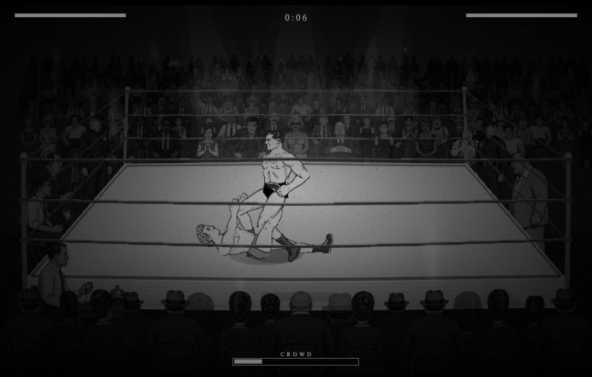
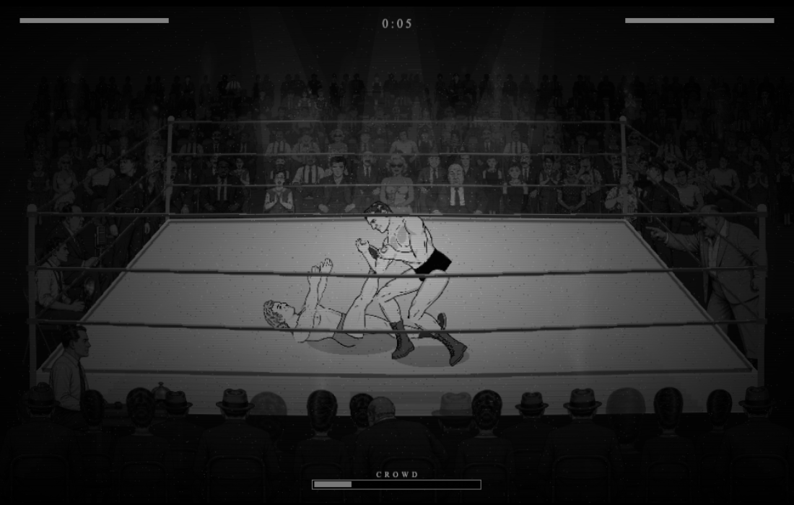
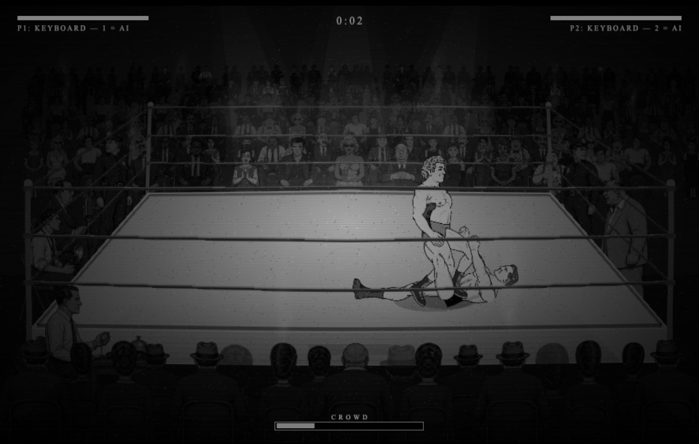
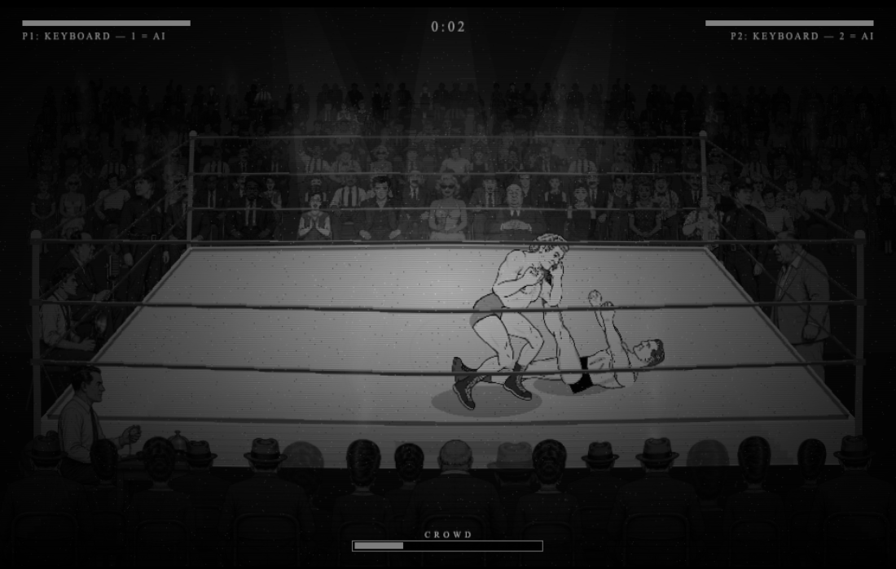
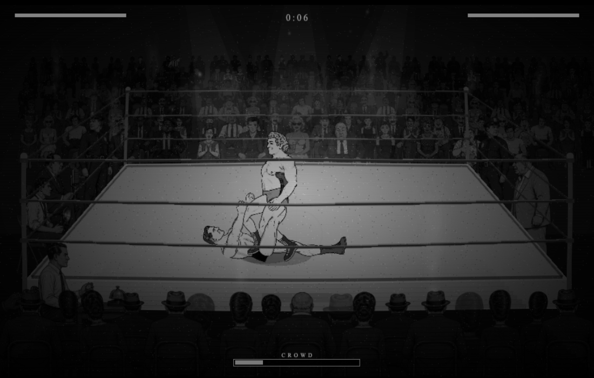
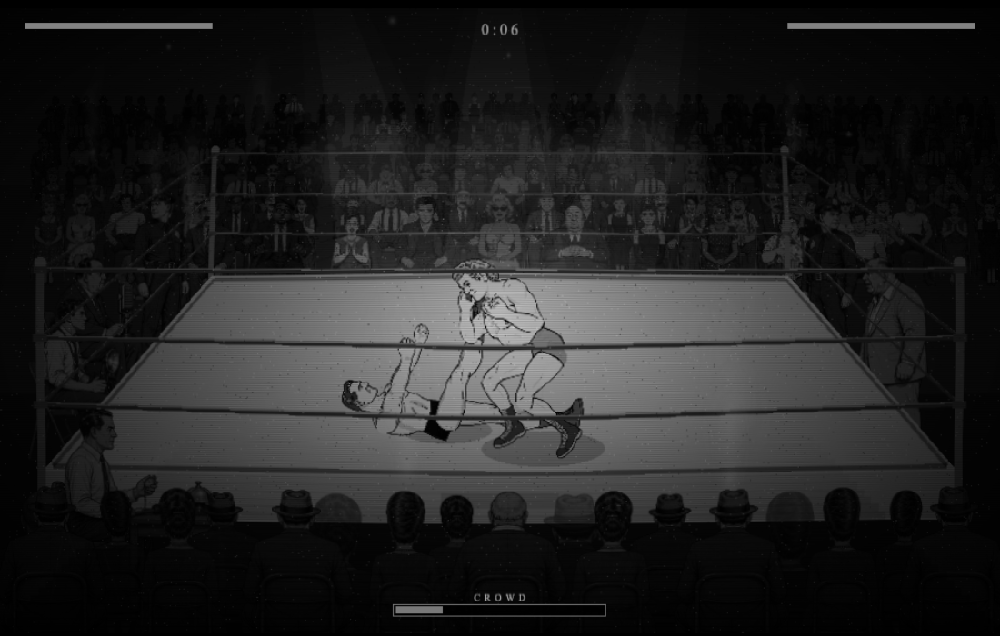

Review candidate for Opus and Derek. Existing shin art, with explicit heel/toe landmarks and painted palm IK. Opt-in: ?light=v1. Same duration, squeeze events and damage.
Held window 0.6–2.7 s: painted palm → heel/toe rounds to 0.00 px in both pairings and facings; zero held frames over 6 px. These are manually selected landmarks, not a judgement of the drawing. Entry/release, layer order, straight trapped knee and sell still need review. Whole-clip attacker ankle motion peaks around 7–8 px/frame.
Final rendered measurements · Before measurements (wrist/proxy targets; different contact metric)







